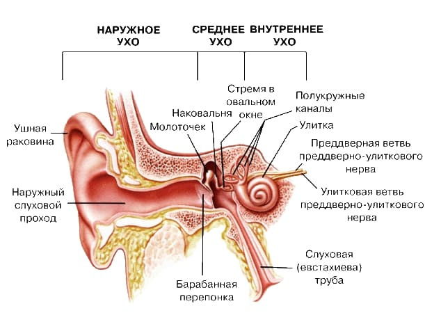
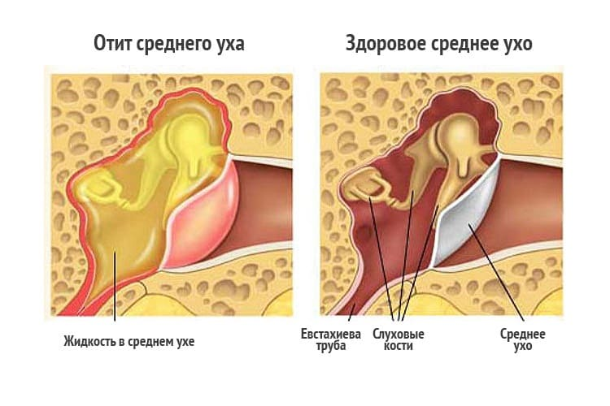

Объяснить причины возникновения отитов и дать сколько-нибудь существенные, выполнимые и понятные рекомендации совершенно невозможно без хотя бы краткой информации о том, как наше ухо устроено. Можно, конечно, предположить, что читатели в такой информации не нуждаются, поскольку внимательно в свое время изучали школьный учебник анатомии, физиологии и гигиены. Но даже зная принципы работы любого устройства вообще, не всегда можно понять, почему это устройство ломается в частности. Это весьма философское заключение мы и положим в основу знакомства с физиологией человеческого уха, дабы понять, почему оно болит и что при этом надо предпринимать.
Отитом называется воспалительный процесс одного из отделов уха.
Приведенное определение позволяет сделать вполне логичный вывод о том, что человеческое ухо и с анатомической, и с физиологической точки зрения состоит из нескольких отделов, каждому из которых присущи свои специфические функции и свои специфические болезни.
Наружное ухо – это тот единственный отдел уха, который можно увидеть. Именно ушная раковина ассоциируется в нашем восприятии с органом слуха, хотя значение ее для самой возможности слышать – наименьшее (из всех отделов уха). Задача ушной раковины – улавливать звуковые колебания и направлять их в слуховой проход, который заканчивается барабанной перепонкой. За барабанной перепонкой начинается среднее ухо.
Среднее ухо выполняет функцию звукопроведения. Сразу же за барабанной перепонкой находится барабанная полость – некое весьма ограниченное пространство, определенным образом усиливающее и обрабатывающее звуковой сигнал. В барабанной полости расположены очень маленькие звуковые косточки. Косточки эти имеют весьма оригинальные названия – молоточек, наковальня и стремечко. Ручка молоточка очень прочно соединена с барабанной перепонкой. Последняя колеблется под действием звуковых волн, эти колебания передаются по цепочке косточек, а основание стремечка находится в особом отверстии височной кости, за которым начинается внутреннее ухо.
Внутреннее ухо – сложная система каналов; расположено оно в височной кости и формирует собственно слуховой орган, который называется улиткой. Необычное название объясняется специфической формой каналов, весьма напоминающих улитку. Каналы заполнены особой жидкостью и так называемыми волосковыми клетками. Определенная частота звука вызывает колебания совершенно определенных волосковых клеток, которые, в свою очередь, преобразуют механические колебания в нервный импульс. Импульсы воспринимаются слуховым нервом и переносятся в особые ядра головного мозга.

С учетом того факта, что анатомически и физиологически выделяют три, теперь уже знакомых нам, отдела уха (наружный, средний и внутренний), врачи, в свою очередь, диагностируют три вида отита – опять-таки наружный отит, средний отит и внутренний отит.
Наружные отиты не имеют особой «ушной» специфики – очевидно, что на коже ушной раковины могут возникнуть такие же воспалительные процессы, как и на любом другом участке кожи, – разнообразные прыщи, фурункулы, угри и т. д. Определенную сложность в плане лечения вызывают гнойники (чаще всего фурункулы), расположенные в слуховом проходе, – сложность, что легко объяснимо, связана не с какими-то особыми способами лечения, а именно с локализацией – до этого самого фурункула просто тяжело добраться.
Внутренние отиты (их еще называют лабиринтитами – система каналов – сложный лабиринт), к счастью, явление не очень частое, но всегда очень серьезное. Внутренний отит, как правило, не первичное заболевание, а осложнение среднего отита или тяжелой общей инфекционной болезни.
Именно средний отит является одним из наиболее частых заболеваний, особенно у детей. В 99 % случаев, произнося фразу: «У вашего ребенка отит», врачи подразумевают средний отит. Мы, пожалуй, не станем плыть против течения и, употребляя в дальнейшем термин «отит», будем иметь в виду именно воспаление среднего уха.
Среднее ухо, как мы уже знаем, представлено барабанной полостью, внутри которой находятся звуковые косточки. Нормальная работа среднего уха возможна лишь тогда, когда давление в барабанной полости равно атмосферному – только при этом условии имеют место адекватные колебания косточек и барабанной перепонки. Поддержание должного уровня давления достигается благодаря наличию особого канала – евстахиевой трубы, соединяющей глотку и барабанную полость. Во время глотания труба открывается, среднее ухо вентилируется и давление в нем выравнивается.

Воспаление в среднем ухе не возникает ни с того ни с сего. Его первопричина – изменение давления в барабанной полости. Отчего это может произойти? Во-первых, при резких изменениях давления на барабанную перепонку – например при нырянии или при подъеме (спуске) во время авиапутешествий. Во-вторых, и эта причина наиболее частая, – при различных воспалительных заболеваниях в носу и глотке, когда нарушается проходимость евстахиевой трубы.
Короче говоря, если отбросить в сторону всякие редкие причины отитов, станет ясным следующее:
отит почти всегда вовсе не является самостоятельным заболеванием и опять-таки почти всегда представляет собой осложнение воспалительных заболеваний носоглотки, прежде всего – острых респираторных вирусных инфекций.
Каждому взрослому человеку прекрасно известно, что при любых простудных заболеваниях носоглотки имеет место повышенное образование слизи. Многократные шмыганья носом, особенно активные шмыганья (неважно при этом, в себя или из себя) способствуют попаданию слизи в просвет евстахиевой трубы; кроме этого, вирусы и бактерии, вызывающие ОРЗ, сами по себе нередко становятся причиной воспаления ее (евстахиевой трубы) слизистой оболочки. Оба указанных фактора вместе или по отдельности вызывают достаточно длительное нарушение вентиляции барабанной полости, и давление в ней становится отрицательным. В этих условиях клетки, выстилающие барабанную полость, начинают выделять воспалительную жидкость. Уже на этом этапе возникают совершенно конкретные симптомы отита – боль в ухе (ушах), нарушение слуха. В дальнейшем (иногда через несколько часов, но чаще через 2–3 суток) бактерии попадают в барабанную полость (все через ту же евстахиеву трубу) и начинают размножаться – отит становится гнойным. Боль нарастает, повышается температура тела, давление в барабанной полости часто возрастает настолько, что происходит разрыв барабанной перепонки и через возникшее отверстие по слуховому проходу начинает выделяться гнойная жидкость.
Приведенная выше теоретическая информация позволяет легко ответить на вопрос: «Почему дети болеют отитом значительно чаще, чем взрослые?» Основные способствующие факторы следующие:
1 Евстахиева труба ребенка значительно уже, чем у взрослого, следовательно, нарушения ее проходимости возникают легче.
2 Дети чаще болеют вирусными и простудными заболеваниями.
3 Дети больше плачут и активно при этом шмыгают носами.
4 У детей сплошь и рядом имеют место аденоиды, которые способны сдавливать евстахиеву трубу.
Основные симптомы отита мы уже назвали – нарушения слуха, боль в ухе и (реже) выделения из уха. А если до этого еще и имела место простуда, то диагноз вообще очевиден. В то же время у детей грудного возраста отит диагностировать заметно сложнее, поскольку ни на боль, ни на понижение слуха ребенок пожаловаться не может. Но забывать про возможность отита ни в коем случае нельзя, поэтому немотивированное на первый взгляд беспокойство, раздражительность, нарушения сна, плач должны подтолкнуть родителей к мыслям об отите.
На ушной раковине, кпереди от отверстия наружного слухового прохода, имеется выступ, который называется козелок. Надавливание на козелок вызывает, при наличии отита, значительное усиление боли, провоцируя у ребенка пронзительный плач. Проверить наличие этого симптома может каждый родитель, а положительная ответная реакция служит поводом для немедленного обращения к врачу.
Профилактика отитов сводится к тому, чтобы не дать густой слизи закупорить евстахиеву трубу – сделать это не так просто, как может показаться на первый взгляд. Важно помнить, что жидкие выделения из носа не опасны; но как не дать слизи загустеть? Следует всего-навсего знать факторы, способствующие высыханию слизи:
1 Дефицит жидкости в организме (следовательно, надо побольше пить).
2 Высокая температура тела (своевременное использование жаропонижающих средств, разумеется, в соответствии с рекомендациями врача).
3 Сухой и теплый воздух в помещении (теплая одежда, но температура воздуха не выше 18–20 ºС, проветривание, частая влажная уборка, удаление из комнаты накопителей пыли).
Еще один важный путь профилактики – умеренность при сморкании (кому не знакома картина – мама, в ее руке платок, под платком детский нос, и все это сопровождается понуканиями типа: «А ну-ка дунь посильнее»).
Точный диагноз отита может установить только врач при осмотре барабанной перепонки (такой осмотр на медицинском языке называется отоскопия). Отоскопия дает возможность определить вид отита, ответить на вопрос, какой он – катаральный (есть воспалительная жидкость, но гноя еще нет) или гнойный, уточнить, много ли жидкости скопилось в барабанной полости. Вся эта информация существенным образом влияет как на выбор лекарственных препаратов, так и на продолжительность лечения.
Как лечат отит? Очень часто используются сосудосуживающие капли в нос (да, да, именно в нос), позволяющие уменьшить отек слизистой оболочки евстахиевой трубы – препараты эти (нафтизин, галазолин, назол и т. п.), противопоказанные при обычном вирусном насморке, становятся просто обязательными при подозрении на возникновение отита.
Местно (в слуховой проход) вводят растворы антисептиков. Раньше часто использовали для этой цели раствор борной кислоты, у нас и сейчас используют, хотя на остальной территории земного шара применяют более современные и более активные препараты. Иногда, при сильных болях в ухе, применяют капли, вызывающие анестезию, нередко используют противовоспалительные гормоны. Лекарственных средств для закапывания в ухо имеется сейчас превеликое множество – отинум, софрадекс, отипакс, гаразон и еще десятки препаратов.
Особую роль в лечении отита играют антибактериальные препараты (антибиотики, сульфаниламиды и т. д.). Их использование имеет ряд особенностей – лекарство должно не только действовать на бактерии, вызвавшие отит, но и хорошо проникать в барабанную полость.
Перечисленные способы терапии ни в коем случае нельзя рассматривать как руководство к действию. Следует помнить, что при правильном и своевременном лечении острый средний отит проходит довольно быстро и практически никогда не заканчивается снижением слуха. Опоздание с началом лечения, «народная самодеятельность» (начиная от прикладывания грелок и заканчивая закапываньем в ухо мочи) чреваты тяжелейшими последствиями – в лучшем случае отит становится хроническим, в худшем – возможны тяжелейшие осложнения от полной потери слуха до гнойного менингита.
Не следует очень уж расстраиваться при гноетечении из уха – на месте разрыва барабанной перепонки при правильном лечении довольно быстро образуется небольшой рубчик, который в дальнейшем почти никогда не приводит к ухудшению слуха.
Последовательность действий при первых признаках отита или при подозрении на отит – незамедлительная консультация врача-отоларинголога. Если это невозможно (до врача далеко), можно самостоятельно использовать сосудосуживающие капли в нос, например нафтизин, в ухо оптимально закапать отинум, который, помимо противовоспалительного действия, способен также растворять ушную серу.
Весьма желательно, чтобы ухо было в тепле (сухое тепло – вата, полиэтиленовая пленка, косынка или шапочка), но только не надо прикладывать горячие грелки. Эти мероприятия не дадут потерять время, необходимое для того, чтобы добраться до врача.
Е.О.Комаровский. "Здоровье ребенка"